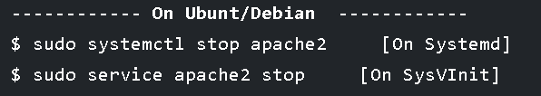

An Apache Server is a web server application that delivers web server content over the internet,suck as HTML, CSS, and more. Apache is a community-developed web application published by the Apache Software Foundation.
- $ sudo apt install apache2
- $ sudo httpd -v OR $ sudo apache2 -v
- -V
- $ sudo httpd -t OR $ sudo apache2ctl -t
- $ sudo systemctl start apache2 [On Systemd] // $ sudo service apache2 start [On SysVInit]
- $ sudo systemctl enable apache2 [On Systemd] // $ sudo chkconfig apache2 on [On SysVInit]
- $ sudo systemctl stop apache2 [On Systemd] // $ sudo service apache2 stop [On SysVInit]
This command is used to install Apache server [on Debian/Ubuntu].
These commands are used for checking the installed version of your Apache server
This command is used to display the Apache version number and compile settings
These commands are used for checking the Apache configuration files for any syntax errors.
These commands are used to start the Apache server [on Ubunt, Debian]
These commands enable the Apache server to auto-start at system boot. [on Ubunt, Debian]
These commands stop the Apache service. [on Ubunt, Debian]
